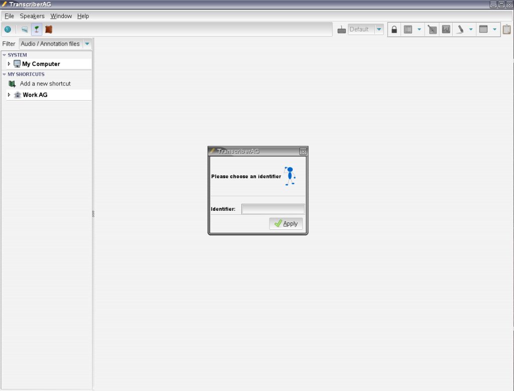

You can start TranscriberAG in the following ways:
Double-click on the TranscriberAG icon
TranscriberAG
TranscriberAG --help
The first time you start TranscriberAG, you will be prompted to define an
identifier. This identifier will be afterwards used to tag annotations
files you create or edit.

This happens only once,
next time you'll start TranscriberAG
you'll go directly to Main window